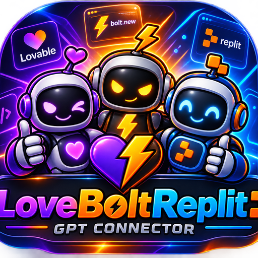

GitHub
Acesse seus repositórios
Offline
Abre a página para criar um token (você já está logado)

GPT Connector
Acesse seus repositórios
Abre a página para criar um token (você já está logado)
Banco de dados dos seus apps
Abre o Supabase para copiar URL e Key